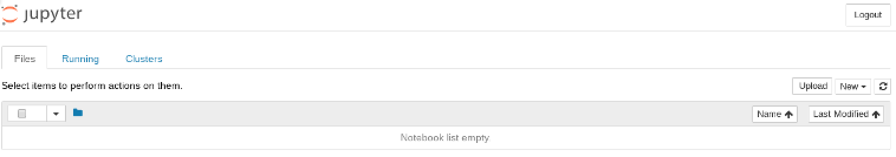
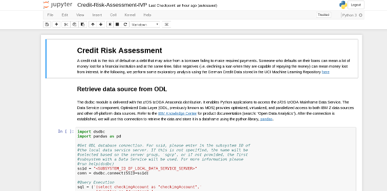

Anaconda/ODL Installation Verification Program (IVP) with Jupyter Notebook
This Installation Verification Program (IVP) is provided by IBM to get started with Anaconda and Optimized Data Layer (ODL) stacks of IzODA. Upon completion of this IVP, it ensures Anaconda and ODL have been installed successfully and users are able to run data visualizations and analysis on Mainframe data sources.
Background
The following shows step-by-step instructions on how to run IBM Open Data Analytics for z/OS Anaconda and ODL stacks. If you have not yet installed Anaconda including Python 3.6 for z/OS please do so using our installation and configuration page before proceeding.
Anaconda for z/OS provides a "conda" command for managing packages and environments. It is similar to Anaconda for other platforms with the exception that it includes a different list of packages. However, many of the popular data science packages are included with this distribution, for instance, pandas, numpy, scipy, scikit-learn, matplotlib, seaborn, and more. In this IVP, you will create and run a Jupyter Notebook on an x86 platform with a Jupyter kernel on z/OS executing Python code using the JKG2AT package and NB2KG's x86 install instructions. The Jupyter Notebook will demonstrate simple usage of data science packages by performing exploratory analysis on credit risk data retrieved from ODL. After completion of this IVP you will have learned the following:
- Basic conda commands
- NB2KG and JKG2AT setup
- Steps for executing code in a Jupyter Notebook
- Ingesting data sources into ODL
- Retrieve data via the Python-ODL API (dsdbc)
- Simple data analysis on z/OS
Ingesting data into the Optimized Data Layer (ODL)
The data source we will be using is the German Credit Data from the UCI Machine Learning Repository. Please download the csv file titled "ivp-german-data.csv" here. This data source is manipulated to avoid pre-processing such as, converting the input data into human-readable format, for the purpose of the IVP.
First, we will convert the CSV data file into a mainframe data source and store it in ODL. ODL enables data from multiple, disconnected sources on z/OS to be virtually integrated into a single, logical data source, which can then be imported into a dataframe for further analysis. Note that previously, ODL was called Mainframe Data Services (MDS). We choose this setup as opposed to reading directly from csv to ensure that we can retrieve a data source from ODL via the ODL-Python module, dsdbc.
- Create a copybook to describe the data layout. Please use the copybook here.
- Allocate an empty data set on the host. For simplicity, create a physical sequential file with a record length that is wide enough to accommodate each record and call it "CREDIT_DATA".
- In Data Server Studio, create a sequential virtual table using the copybook given above and the empty physical sequential dataset. We will use this dataset to insert our csv data.
- Use the ivp-load.py script to load the csv data into the PS dataset. The script uses pandas to read the csv data into a dataframe and dsdbc to insert the values in the dataframe into the physical dataset. Please change the ivp-load.py variable ssid to the subsystem id of the local data service server.
Once the script is done running, we now have the CSV data in ODL.
For more information on ODL please refer to the Apache Spark Implementation on IBM z/OS Note: ODL is referred to as MDSS or Mainframe Data Service in the redbook. Since writing the redbook, it has changed names to Optimized Data Layer (ODL).
JKG2AT and NB2KG Setup
To execute and run a Jupyter Notebook server, the current solution is to use our JKG2AT conda package and NB2KG's install process on x86.
JKG2AT isn't included as part of the SMPE Anaconda install so you will need to run the command given in the IzODA channel:
conda install -c izoda JKG2AT
Note: Unless the system administrator set permissions for everyone to be able to administer Anaconda or if you want to install JKG2AT in your own conda environment you will need to first make a clone of the environment:
conda create -n <name-of-env> --clone="<path-to-anaconda-home>"
When the clone is complete, you will need to activate the new environment:
source activate <name-of-env>
Notice that when you activate the new environment you will see the environment name in parenthesis before the prompt. After the clone is complete, please run the conda install command given above.
When the install is complete, please run the following to ensure JKG2AT is in the environment:
conda list
You should see JKG2AT listed as one of the installed conda packages:
JKG2AT 1.0.0 6 izoda
The JKG2AT install will also install its dependencies, apache toree and kernel-gateway among some others. Note for this IVP, we will only be using Jupyter's ipython kernel for python 3. Apache Toree kernel is used to interact with Apache Spark which will not be included in this IVP. After JKG2AT is installed, please follow the instructions under /Path/To/Anaconda/lib/python3.6/site-packages/jkg2at/README.md (If you are in a conda environment /Path/To/Anaconda/envs/
Once you have setup the z/OS side, you will now need to set up Jupyter Notebook Server on the x86 side. Please follow the instructions here.
When both sides of the solution are setup, you should be able to start up jupyter kernel gateway using the following command:
jupyter kernelgateway
Note: This is if the optional jupyter_kernel_gateway_config.py is setup. If not please run with --ip and --port options.
And you should also be able to start up the notebook server on x86 in the container via the following run command:
./start.sh <optional-config-file>
You will know the setup is successful if you see the jupyter notebook dashboard in your web browser:

Then if you click on the drop-down menu "New" you should see Python 3 as one of the options for creating a new notebook.
Running Jupyter Notebook
For running the Jupyter Notebook, you will need to upload our Jupyter Notebook into your Jupyter Notebook server. In order to upload, please download Credit-Risk-Assessment-IVP.ipynb to your local machine. When you have finished downloading, click the "Upload" button in your Jupyter Notebook dashboard and find the .ipynb file you just downloaded. Then hit "Open". At this point you should see the notebook in your dashboard with the option to "Upload" next to the file name. Please click "Upload". Run the Jupyter Notebook by clicking on the .ipynb file. A new window should pop open and you'll see something like the following:

Notice in the top right hand corner, it says the kernel you are using, in our case, Python 3. Also notice, the open circle that is next to the kernel name, this is telling us that the connection is established and the kernel is ready to execute code written in the Jupyter notebook cells (the different cells are denoted with "In []:" next to it) In our IVP notebook, there are two different types of cells, Markdown and code cells. Markdown cells include documentation for our IVP and code cells include python code to be executed by the jupyter kernel, ipython. To start executing code, click on a cell and go to Cell > Run Cells (or use the shortcut keys Shift + Enter). The execution is done when you see a number in "In []:" i.e. "In [1]:" next to the cell. The number corresponds to the order the cell was run in. (Order matters! Please run the notebook from top to bottom or you can run all cells by going to Cell > Run All). If there is a * within the brackets i.e. "In [*]:" that means the code is still executing. Note also that some of the code cells will produce output that will appear directly underneath the cell.
The Jupyter Notebook is split into three sections:
- Retrieve Data Source from ODL
- Data Analysis with Pandas
- Visualization with Matplotlib
Authors: Yunli Tang, Joe Bostian Date: September 5th, 2017